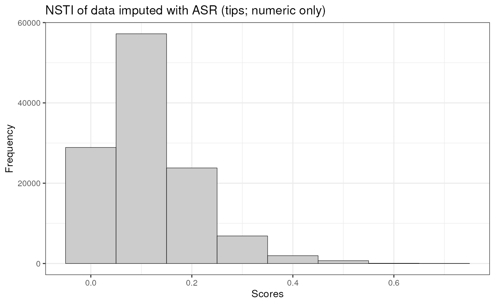
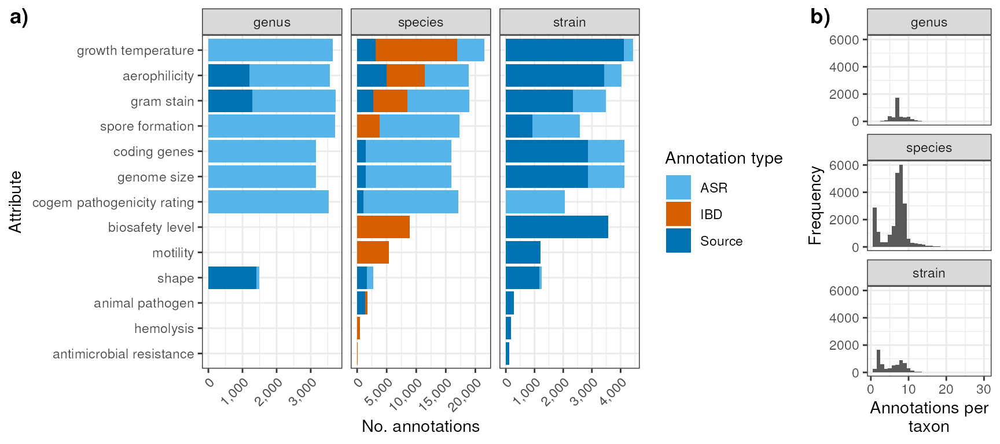

Data integration and stats
Source:vignettes/articles/data_integration_and_stats.Rmd
data_integration_and_stats.RmdImport data
A couple of filters are applied by deault when importing bugphyzz
with the importBugphyzz function:
- Data imputed through ASR must have a validation result higher than 0.5.
- For discrete attributes, Frequency/Score most be above 0.5 for imputed data (rarely frequency is excluded).
bp <- importBugphyzz() |>
map(~ mutate(.x, NCBI_ID = as.character(NCBI_ID)))Columns with NAs
## This is more of a check tha a result
nas_in_cols <- lapply(bp, function(x) {
n <- map_int(x, function(y) sum(is.na(y)))
per <- map_dbl(x, function(y) round(mean(is.na(y)) * 100))
data.frame(column_name = colnames(x), n = unname(n), per = unname(per))
}) |>
bind_rows(.id = "names") |>
group_by(column_name) |>
summarise(
n_rows = sum(n),
per_rows = round(mean(per))
)
myDataTable(nas_in_cols)Totals
Number of taxa, annotations, sources, attribute groups (physiologies), and attributes.
Let’s only consider numbers for
## Number of unique taxa
n_taxa <- map(bp, ~ .x$NCBI_ID) |>
unlist(use.names = FALSE) |>
unique() |>
length()
## Number of annotations
n_annotations <- map_int(bp, nrow) |>
sum()
## Number of physiologies/attribute groups
n_attr <- length(bp)
## Number of sources
n_sources <- map(bp, ~ {
unique(.x$Attribute_source) |>
{\(y) y[!is.na(y)]}()
}) |>
unlist(recursive = TRUE, use.names = FALSE) |>
unique() |>
length()
## Number of annotations from sources
n_annotations_source <- map_int(bp, ~ {
.x |>
filter(!is.na(Attribute_source)) |>
nrow()
}) |>
sum()
## Number of annotations IBD
n_annotations_ibd <- map_int(bp, ~ {
.x |>
filter(Evidence == "tax") |>
nrow()
}) |>
sum()
## Number of annotations ASR
n_annotations_asr <- map_int(bp, ~ {
.x |>
filter(Evidence == "asr") |>
nrow()
}) |>
sum()
## Number of
num_vs_dis_n <- map_chr(bp, ~ {
unique(.x$Attribute_type)
}) |>
table() |>
as.data.frame() |>
set_names(c("name", "n")) |>
mutate(name = ifelse(name == "numeric", "numeric", "discrete")) |>
count(name, wt = n)
attr_asr_default_names <- map(bp, ~ {
unique(.x$Evidence)
}) |>
keep(~ "asr" %in% .x) |>
names()
attr_asr_default <- length(attr_asr_default_names)
attr_asr_all <- importVal() |>
filter(rank == "all") |>
select(physiology, mcc_mean, r2_mean) |>
pull(physiology) |>
unique() |>
length()
count_summary_tbl <- tibble::tribble(
~name, ~n,
"Number of taxa", n_taxa,
"Number of annotations", n_annotations,
"Number of attributes", n_attr,
"Number of discrete attributes", pull(filter(num_vs_dis_n, name == "discrete"),n),
"Number of sources", n_sources,
"Number of annoations from sources", n_annotations_source,
"Number of IBD annotations", n_annotations_ibd,
"Number of annotations imputed through ASR", n_annotations_asr,
"Number of attributes with ASR data (default > 0.5 val)", attr_asr_default,
"Number of attributes with ASR data (all)", attr_asr_all
)
myDataTable(count_summary_tbl)Histograms of scores
bp2 <- importBugphyzz(v = 0, exclude_rarely = FALSE)
bp2_discrete <- map(bp2, ~{
.x |>
filter(Evidence == "asr", Attribute_type != "numeric")
}) |>
discard(~ !nrow(.x))
scores <- map(bp2_discrete, ~ pull(.x, Score)) |>
unlist(recursive = TRUE, use.names = FALSE) |>
{\(y) data.frame(x = y)}()
scores |>
ggplot(aes(x)) +
geom_histogram(binwidth = 0.1, fill = "gray80", color = "black", size = 0.2) +
labs(
x = "Scores", y = "Frequency",
title = "Scores of data imputed with ASR (discrete only)"
) +
theme_bw()
Histogram of NSTI
bp2_numeric <- map(bp2, ~{
.x |>
filter(
Evidence == "asr", Attribute_type == "numeric",
)
}) |>
discard(~ !nrow(.x)) |>
map(~ filter(.x, !is.na(NSTI)))
nsti <- map(bp2_numeric, ~ pull(.x, NSTI)) |>
unlist(recursive = TRUE, use.names = FALSE) |>
{\(y) data.frame(x = y)}()
nsti |>
ggplot(aes(x)) +
geom_histogram(binwidth = 0.1, fill = "gray80", color = "black", size = 0.2) +
labs(
x = "Scores", y = "Frequency",
title = "NSTI of data imputed with ASR (tips; numeric only)"
) +
theme_bw()
Summary table
evidence_summary <- bp |>
map(~ {
.x |>
mutate(
Evidence = case_when(
Evidence %in% c("nas", "tas", "exp", "igc") ~ "source",
TRUE ~ Evidence
)
) |>
count(Evidence) |>
pivot_wider(
names_from = "Evidence", values_from = "n"
)
}) |>
bind_rows(.id = "Attribute") |>
modify(~ replace_na(.x, 0)) |>
relocate(Attribute, source, ibd = tax, asr) |>
mutate(total = source + ibd + asr)
number_of_attr_values <- bp |>
map(~ {
attr_type <- unique(.x$Attribute_type)
if (attr_type %in% c("binary", "numeric")) {
output <- .x |>
select(Attribute, Attribute_type) |>
distinct() |>
count(Attribute, Attribute_type, name = "Attribute_values") |>
mutate(Attribute_values = ifelse(Attribute_type == "binary", 2, Attribute_values))
} else {
output <- .x |>
select(Attribute, Attribute_value, Attribute_type) |>
distinct() |>
count(Attribute, Attribute_type, name = "Attribute_values")
}
return(output)
}) |>
bind_rows(.id = "Attribute")
references <- bp |>
map(~{
.x |>
select(Attribute, Attribute_source) |>
drop_na() |>
distinct() |>
group_by(Attribute) |>
mutate(Attribute_source = paste0(sort(Attribute_source), collapse = ", ")) |>
ungroup() |>
distinct()
}) |>
bind_rows()
tbl <- reduce(list(number_of_attr_values, evidence_summary, references), left_join) |>
rename(Type = Attribute_type, `No. Attribute values` = Attribute_values,
`Annotations from Source` = source, `Annotations from IBD` = ibd,
`Annotations from ASR` = asr, `Total annotations` = total,
Sources = Attribute_source
)
myDataTable(tbl, page_len = nrow(tbl))
valid_ranks <- c(
"superkingdom", "phylum", "class", "order", "family",
"genus", "species", "strain"
)
attr_order <- tbl |>
select(Attribute, `Total annotations`) |>
distinct() |>
arrange(-`Total annotations`) |>
pull(Attribute)
counts_rank <- bp |>
map(~ count(.x, Attribute, Rank)) |>
bind_rows() |>
mutate(Attribute = factor(Attribute, levels = attr_order)) |>
mutate(Rank = factor(Rank, levels = valid_ranks))
p_counts_rank <- counts_rank |>
ggplot(aes(Attribute, n)) +
geom_col(aes(fill = Rank), position = "stack") +
labs(
x = "Attribute", y = "No. annotations"
) +
theme_bw() +
theme(
axis.text.x = element_text(angle = 45, hjust = 1)
)
p_counts_rank
p_count_types <- tbl |>
mutate(Attribute = factor(Attribute, levels = attr_order)) |>
pivot_longer(
names_to = "count_type", values_to = "n", cols = c(4, 5, 6)
) |>
ggplot(aes(Attribute, n)) +
geom_col(aes(fill = count_type), position = "stack") +
labs(
x = "Attribute", y = "No. annotations"
) +
scale_fill_discrete(name = "Annotation types") +
scale_y_continuous(label = scales::comma) +
theme_bw() +
theme(axis.text.x = element_text(angle = 45, hjust = 1))
p_count_types
n_annot_tax <- bp |>
map(~ {
attr_type <- unique(.x$Attribute_type)
.x |>
filter(Rank %in% c("strain", "species", "genus")) |>
select(Attribute, NCBI_ID, Rank)
}) |>
bind_rows() |>
count(NCBI_ID, Rank)
p_n_annot_tax <- n_annot_tax |>
ggplot() +
geom_histogram(aes(x = n)) +
labs(
x = "Number of annotations per taxon",
y = "Frequency"
) +
facet_wrap(~Rank, ncol = 1) +
theme_bw()
n_annot_tax |>
summary()
#> NCBI_ID Rank n
#> Length:33635 Length:33635 Min. : 1.0
#> Class :character Class :character 1st Qu.: 6.0
#> Mode :character Mode :character Median :15.0
#> Mean :11.9
#> 3rd Qu.:16.0
#> Max. :77.0
p1 <- plot_grid(
p_counts_rank, p_count_types,
labels = c('a)', 'b)'),
ncol = 1, align = "v"
# rel_widths = c(0.55, 0.45)
)
p2 <- plot_grid(
p1, p_n_annot_tax,
labels = c("", "c)"),
ncol = 2,
rel_widths = c(0.75, 0.25)
)
p2
Validation plots
Discrete
val <- importVal()
dis_phys_names <- val |>
filter(!is.na(mcc_mean)) |>
group_by(physiology) |>
slice_max(order_by = mcc_mean, n = 1) |>
arrange(-mcc_mean) |>
pull(physiology)
pValDis <- val |>
filter(!is.na(mcc_mean)) |>
mutate(ltp_bp = ifelse(is.na(ltp_bp), ltp_bp_phys, ltp_bp)) |>
mutate(physiology = factor(physiology, levels = dis_phys_names)) |>
mutate(guide_col = ifelse(as.character(physiology) == attribute, as.character(physiology), paste0(as.character(physiology), "|", attribute))) |>
arrange(physiology, mcc_mean) |>
ggplot(aes(forcats::fct_inorder(guide_col), mcc_mean, group = attribute)) +
geom_errorbar(
aes(ymin = mcc_mean - mcc_sd, ymax = mcc_mean + mcc_sd),
position = position_dodge(0.5),
width = 0, linewidth = 0.3
) +
geom_hline(yintercept = 0.5, color = "red", linetype = "dotdash", linewidth = 0.2) +
geom_point(
aes(size = ltp_bp),
shape = 23, position = position_dodge(0.5), fill = "white"
# size = 2
) +
scale_size_continuous(name = "tips annotated") +
scale_y_continuous(
breaks = round(seq(min(val$mcc_mean - val$mcc_sd, na.rm = TRUE) - 0.1, max(val$mcc_mean + val$mcc_sd, na.rm = TRUE) + 0.1, 0.2), 1)
) +
labs(
y = "Matthews Correlation Coefficient",
x = "Attribute|Attribute value"
) +
theme_bw() +
theme(
axis.text.x = element_text(angle = 90, hjust = 1),
panel.grid.minor = element_blank()
) +
coord_flip()Numeric
num <- val |>
filter(!is.na(r2_mean))
num_phys_names <- num |>
group_by(physiology) |>
slice_max(order_by = r2_mean, n = 1) |>
arrange(-r2_mean) |>
pull(physiology)
pValNum <- val |>
filter(!is.na(r2_mean)) |>
mutate(ltp_bp = ifelse(is.na(ltp_bp), ltp_bp_phys, ltp_bp)) |>
ggplot(aes(reorder(physiology, -r2_mean), r2_mean, group = attribute)) +
geom_errorbar(
aes(ymin = r2_mean - r2_sd, ymax = r2_mean + r2_sd),
position = position_dodge(0.5),
width = 0, linewidth = 0.3
) +
geom_hline(yintercept = 0.5, color = "red", linetype = "dotdash", linewidth = 0.2) +
geom_point(
aes(size = ltp_bp),
shape = 23, position = position_dodge(0.5), fill = "white"
# size = 2
) +
scale_size_continuous(name = "tips annotated") +
scale_y_continuous(
breaks = round(seq(min(val$r2_mean - val$r2_sd, na.rm = TRUE) - 0.1, max(val$r2_mean + val$r2_sd, na.rm = TRUE) + 0.1, 0.2), 1)
) +
labs(
y = "R-squared",
x = "Attribute"
) +
theme_bw() +
theme(
axis.text.x = element_text(angle = 90, hjust = 1),
panel.grid.minor = element_blank()
) +
coord_flip()
pVal <- plot_grid(
pValDis, pValNum,
# labels = c('a)', 'b)'),
ncol = 1,
align = 'v', rel_heights = c(0.83, 0.17)
)
pVal
Completeness
Totals before and after data imputation
taxids_before <- bp |>
map( ~ {
df <- .x |>
filter(Evidence != "asr") |>
select(NCBI_ID, Rank) |>
distinct()
# ids <- as.character(df$NCBI_ID)
# names(ids) <- df$Rank
return(df)
}) |>
bind_rows() |>
distinct() |>
count(Rank, name = "before_imputation")
taxids_after <- bp |>
map( ~ {
df <- .x |>
# filter(Evidence != "asr") |>
select(NCBI_ID, Rank) |>
distinct()
# ids <- as.character(df$NCBI_ID)
# names(ids) <- df$Rank
return(df)
}) |>
bind_rows() |>
distinct() |>
count(Rank, name = "after_imputation")
total_increment_of_taxa <- full_join(taxids_before, taxids_after, by = "Rank")
myDataTable(total_increment_of_taxa)Completeness tables
valid_ranks <- validRanks()
exclude_all_fname <- system.file(
file.path('extdata', 'proc_exclude_all_07122023.txt'),
package = 'taxPPro',
mustWork = TRUE
)
exclude_all <- read.table(exclude_all_fname, col.names = 'taxid')
exclude_all$taxid <- as.character(exclude_all$taxid)
exclude_all$rank <- taxizedb::taxid2rank(exclude_all$taxid, db = 'ncbi')
exclude_all <- exclude_all[which(!is.na(exclude_all$rank)),]
# exclude_all$rank <- ifelse(exclude_all$rank == 'superkingdom', 'kingdom', exclude_all$rank)
exclude_all <- exclude_all[which(exclude_all$rank %in% valid_ranks),]
strains_fname <- system.file(file.path('extdata', 'proc_strains_07122023.txt'), package = 'taxPPro', mustWork = TRUE)
strains <- read.table(strains_fname, col.names = 'taxid')
strains$taxid <- as.character(strains$taxid)
strains$rank <- taxizedb::taxid2rank(strains$taxid, db = 'ncbi')
strains <- strains[which(strains$rank == 'strain'),]
reference_df <- rbind(exclude_all, strains)
reference_summary <- reference_df |>
count(rank, name = "NCBI_ref")
myDataTable(reference_summary)
inSet <- function(dat, ref) {
valid_ranks <- c(
"superkingdom",
"phylum", "class","order", "family",
"genus", "species", "strain"
)
datByRank <- split(dat, dat$Rank)
refByRank <- split(ref, ref$rank)
output <- vector("integer", length(valid_ranks))
for (i in seq_along(output)) {
names(output)[i] <- valid_ranks[i]
if (valid_ranks[i] %in% names(datByRank)) {
output[[i]] <-
sum(unique(datByRank[[valid_ranks[i]]]$NCBI_ID) %in% refByRank[[valid_ranks[i]]]$taxid)
}
}
df <- data.frame(rank = names(output), inSet = unname(output))
return(df)
}
outSet <- function(dat, ref) {
valid_ranks <- c(
"superkingdom",
"phylum", "class","order", "family",
"genus", "species", "strain"
)
datByRank <- split(dat, dat$Rank)
refByRank <- split(ref, ref$rank)
output <- vector("integer", length(valid_ranks))
for (i in seq_along(output)) {
names(output)[i] <- valid_ranks[i]
if (valid_ranks[i] %in% names(datByRank)) {
output[[i]] <-
sum(!unique(datByRank[[valid_ranks[i]]]$NCBI_ID) %in% refByRank[[valid_ranks[i]]]$taxid)
}
}
df <- data.frame(rank = names(output), outSet = unname(output))
return(df)
}Before imputation
insetDataBefore <- bp |>
map(~ filter(.x, Evidence != "asr")) |>
map(~ inSet(dat = .x, ref = reference_df)) |>
bind_rows(.id = "Attribute")
outsetDataBefore <- bp |>
map(~ outSet(dat = .x, ref = reference_df)) |>
bind_rows(.id = "Attribute")
completenessBefore <- reduce(list(insetDataBefore, outsetDataBefore, reference_summary), full_join) |>
mutate(completeness = round(inSet / NCBI_ref * 100)) |>
rename(Rank = rank)After imputation
insetDataAfter <- bp |>
map(~ inSet(dat = .x, ref = reference_df)) |>
bind_rows(.id = "Attribute")
outsetDataAfter <- bp |>
map(~ outSet(dat = .x, ref = reference_df)) |>
bind_rows(.id = "Attribute")
completenessAfter <- reduce(list(insetDataAfter, outsetDataAfter, reference_summary), full_join) |>
mutate(completeness = round(inSet / NCBI_ref * 100)) |>
rename(Rank = rank)
completeness <- full_join(
completenessBefore, completenessAfter, suffix = c("_bef", "_aft"),
by = c("Attribute", "Rank", "NCBI_ref")
) |>
select(Attribute, Rank, starts_with("completeness"))Completenes heatmaps
## Create matrices
completeness_mat_before <- completenessBefore |>
select(Attribute, Rank, completeness) |>
pivot_wider(
names_from = Rank, values_from = completeness, values_fill = 0
) |>
column_to_rownames(var = 'Attribute') |>
select(strain, species, genus) |>
as.matrix()
completeness_mat_after <- completenessAfter |>
select(Attribute, Rank, completeness) |>
pivot_wider(
names_from = Rank, values_from = completeness, values_fill = 0
) |>
column_to_rownames(var = 'Attribute') |>
relocate(
strain, species, genus, family, order, class, phylum, superkingdom
) |>
as.matrix()
ordered_rownames <- names(sort(rowSums(completeness_mat_after), decreasing = TRUE))
## Create heatmaps
color_fun <- circlize::colorRamp2(
breaks = c(0, 100), colors = c('white', 'gray40')
)
lgd <- Legend(col_fun = color_fun, title = "Completeness")
ht_b <- Heatmap(
matrix = completeness_mat_before[ordered_rownames,],
cluster_rows = FALSE, cluster_columns = FALSE,
row_names_side = 'left',
show_heatmap_legend = FALSE,
col = color_fun,
column_title = "No ASR",
row_names_max_width = max_text_width(
rownames(completeness_mat_before),
gp = gpar(fontsize = 12)
)
)
ht_a <- Heatmap(
matrix = completeness_mat_after[ordered_rownames,],
cluster_rows = FALSE, cluster_columns = FALSE,
row_names_side = 'left',
name = 'Completeness',
heatmap_legend_param = list(
at = c(0, 50, 100)
),
col = color_fun,
column_title = "ASR",
row_names_max_width = max_text_width(
rownames(completeness_mat_after),
gp = gpar(fontsize = 12)
)
)
## Combine heatmaps
ht <- grid.grabExpr(
draw(ht_b + ht_a, ht_gap = unit(0.4, "cm"))
)Session information
sessioninfo::session_info()
#> ─ Session info ───────────────────────────────────────────────────────────────
#> setting value
#> version R version 4.3.2 (2023-10-31)
#> os Ubuntu 22.04.3 LTS
#> system x86_64, linux-gnu
#> ui X11
#> language en
#> collate en_US.UTF-8
#> ctype en_US.UTF-8
#> tz Etc/UTC
#> date 2024-01-22
#> pandoc 3.1.1 @ /usr/local/bin/ (via rmarkdown)
#>
#> ─ Packages ───────────────────────────────────────────────────────────────────
#> package * version date (UTC) lib source
#> abind 1.4-5 2016-07-21 [1] RSPM (R 4.3.0)
#> aplot 0.2.2 2023-10-06 [1] RSPM (R 4.3.0)
#> backports 1.4.1 2021-12-13 [1] RSPM (R 4.3.0)
#> BiocFileCache 2.10.1 2023-10-26 [1] Bioconductor
#> BiocGenerics 0.48.1 2023-11-01 [1] Bioconductor
#> bit 4.0.5 2022-11-15 [1] RSPM (R 4.3.0)
#> bit64 4.0.5 2020-08-30 [1] RSPM (R 4.3.0)
#> blob 1.2.4 2023-03-17 [1] RSPM (R 4.3.0)
#> bold 1.3.0 2023-05-02 [1] RSPM (R 4.3.0)
#> broom 1.0.5 2023-06-09 [1] RSPM (R 4.3.0)
#> bslib 0.6.1 2023-11-28 [1] RSPM (R 4.3.0)
#> bugphyzz * 0.0.1.4 2024-01-22 [1] Github (waldronlab/bugphyzz@3185c45)
#> bugphyzzAnalyses * 0.1.0 2024-01-22 [1] local
#> cachem 1.0.8 2023-05-01 [1] RSPM (R 4.3.0)
#> Cairo 1.6-2 2023-11-28 [1] RSPM (R 4.3.0)
#> car 3.1-2 2023-03-30 [1] RSPM (R 4.3.0)
#> carData 3.0-5 2022-01-06 [1] RSPM (R 4.3.0)
#> circlize 0.4.15 2022-05-10 [1] RSPM (R 4.3.0)
#> cli 3.6.2 2023-12-11 [1] RSPM (R 4.3.0)
#> clue 0.3-65 2023-09-23 [1] RSPM (R 4.3.0)
#> cluster 2.1.4 2022-08-22 [2] CRAN (R 4.3.2)
#> codetools 0.2-19 2023-02-01 [2] CRAN (R 4.3.2)
#> colorspace 2.1-0 2023-01-23 [1] RSPM (R 4.3.0)
#> ComplexHeatmap * 2.18.0 2023-10-24 [1] Bioconductor
#> conditionz 0.1.0 2019-04-24 [1] RSPM (R 4.3.0)
#> cowplot * 1.1.2 2023-12-15 [1] RSPM (R 4.3.0)
#> crayon 1.5.2 2022-09-29 [1] RSPM (R 4.3.0)
#> crosstalk 1.2.1 2023-11-23 [1] RSPM (R 4.3.0)
#> crul 1.4.0 2023-05-17 [1] RSPM (R 4.3.0)
#> curl 5.2.0 2023-12-08 [1] RSPM (R 4.3.0)
#> data.table 1.14.10 2023-12-08 [1] RSPM (R 4.3.0)
#> DBI 1.2.1 2024-01-12 [1] RSPM (R 4.3.0)
#> dbplyr 2.4.0 2023-10-26 [1] RSPM (R 4.3.0)
#> desc 1.4.3 2023-12-10 [1] RSPM (R 4.3.0)
#> digest 0.6.34 2024-01-11 [1] RSPM (R 4.3.0)
#> doParallel 1.0.17 2022-02-07 [1] RSPM (R 4.3.0)
#> dplyr * 1.1.4 2023-11-17 [1] RSPM (R 4.3.0)
#> DT 0.31 2023-12-09 [1] RSPM (R 4.3.0)
#> ellipsis 0.3.2 2021-04-29 [1] RSPM (R 4.3.0)
#> evaluate 0.23 2023-11-01 [1] RSPM (R 4.3.0)
#> fansi 1.0.6 2023-12-08 [1] RSPM (R 4.3.0)
#> farver 2.1.1 2022-07-06 [1] RSPM (R 4.3.0)
#> fastmap 1.1.1 2023-02-24 [1] RSPM (R 4.3.0)
#> filelock 1.0.3 2023-12-11 [1] RSPM (R 4.3.0)
#> forcats * 1.0.0 2023-01-29 [1] RSPM (R 4.3.0)
#> foreach 1.5.2 2022-02-02 [1] RSPM (R 4.3.0)
#> fs 1.6.3 2023-07-20 [1] RSPM (R 4.3.0)
#> generics 0.1.3 2022-07-05 [1] RSPM (R 4.3.0)
#> GetoptLong 1.0.5 2020-12-15 [1] RSPM (R 4.3.0)
#> ggbreak * 0.1.2 2023-06-26 [1] RSPM (R 4.3.0)
#> ggfun 0.1.3 2023-09-15 [1] RSPM (R 4.3.0)
#> ggplot2 * 3.4.4 2023-10-12 [1] RSPM (R 4.3.0)
#> ggplotify 0.1.2 2023-08-09 [1] RSPM (R 4.3.0)
#> ggpubr * 0.6.0 2023-02-10 [1] RSPM (R 4.3.0)
#> ggsignif 0.6.4 2022-10-13 [1] RSPM (R 4.3.0)
#> GlobalOptions 0.1.2 2020-06-10 [1] RSPM (R 4.3.0)
#> glue 1.7.0 2024-01-09 [1] RSPM (R 4.3.0)
#> gridGraphics 0.5-1 2020-12-13 [1] RSPM (R 4.3.0)
#> gtable 0.3.4 2023-08-21 [1] RSPM (R 4.3.0)
#> highr 0.10 2022-12-22 [1] RSPM (R 4.3.0)
#> hms 1.1.3 2023-03-21 [1] RSPM (R 4.3.0)
#> hoardr 0.5.3 2023-01-26 [1] RSPM (R 4.3.0)
#> htmltools 0.5.7 2023-11-03 [1] RSPM (R 4.3.0)
#> htmlwidgets 1.6.4 2023-12-06 [1] RSPM (R 4.3.0)
#> httpcode 0.3.0 2020-04-10 [1] RSPM (R 4.3.0)
#> httr 1.4.7 2023-08-15 [1] RSPM (R 4.3.0)
#> IRanges 2.36.0 2023-10-24 [1] Bioconductor
#> iterators 1.0.14 2022-02-05 [1] RSPM (R 4.3.0)
#> jquerylib 0.1.4 2021-04-26 [1] RSPM (R 4.3.0)
#> jsonlite 1.8.8 2023-12-04 [1] RSPM (R 4.3.0)
#> knitr 1.45 2023-10-30 [1] RSPM (R 4.3.0)
#> labeling 0.4.3 2023-08-29 [1] RSPM (R 4.3.0)
#> lifecycle 1.0.4 2023-11-07 [1] RSPM (R 4.3.0)
#> magrittr 2.0.3 2022-03-30 [1] RSPM (R 4.3.0)
#> matrixStats 1.2.0 2023-12-11 [1] RSPM (R 4.3.0)
#> memoise 2.0.1 2021-11-26 [1] RSPM (R 4.3.0)
#> munsell 0.5.0 2018-06-12 [1] RSPM (R 4.3.0)
#> patchwork * 1.2.0 2024-01-08 [1] RSPM (R 4.3.0)
#> pillar 1.9.0 2023-03-22 [1] RSPM (R 4.3.0)
#> pkgconfig 2.0.3 2019-09-22 [1] RSPM (R 4.3.0)
#> pkgdown 2.0.7 2022-12-14 [1] RSPM (R 4.3.0)
#> png 0.1-8 2022-11-29 [1] RSPM (R 4.3.0)
#> purrr * 1.0.2 2023-08-10 [1] RSPM (R 4.3.0)
#> R6 2.5.1 2021-08-19 [1] RSPM (R 4.3.0)
#> ragg 1.2.7 2023-12-11 [1] RSPM (R 4.3.0)
#> rappdirs 0.3.3 2021-01-31 [1] RSPM (R 4.3.0)
#> RColorBrewer 1.1-3 2022-04-03 [1] RSPM (R 4.3.0)
#> readr 2.1.5 2024-01-10 [1] RSPM (R 4.3.0)
#> rjson 0.2.21 2022-01-09 [1] RSPM (R 4.3.0)
#> rlang 1.1.3 2024-01-10 [1] RSPM (R 4.3.0)
#> rmarkdown 2.25 2023-09-18 [1] RSPM (R 4.3.0)
#> RSQLite 2.3.4 2023-12-08 [1] RSPM (R 4.3.0)
#> rstatix 0.7.2 2023-02-01 [1] RSPM (R 4.3.0)
#> S4Vectors 0.40.2 2023-11-23 [1] Bioconductor 3.18 (R 4.3.2)
#> sass 0.4.8 2023-12-06 [1] RSPM (R 4.3.0)
#> scales 1.3.0 2023-11-28 [1] RSPM (R 4.3.0)
#> sessioninfo 1.2.2 2021-12-06 [1] RSPM (R 4.3.0)
#> shape 1.4.6 2021-05-19 [1] RSPM (R 4.3.0)
#> stringi 1.8.3 2023-12-11 [1] RSPM (R 4.3.0)
#> stringr 1.5.1 2023-11-14 [1] RSPM (R 4.3.0)
#> systemfonts 1.0.5 2023-10-09 [1] RSPM (R 4.3.0)
#> taxa 0.4.2 2022-04-12 [1] RSPM (R 4.3.0)
#> taxize 1.0 2024-01-22 [1] Github (ropensci/taxize@bcff2a6)
#> taxizedb 0.3.1 2023-04-03 [1] RSPM (R 4.3.0)
#> taxPPro * 0.1.0 2024-01-22 [1] Github (sdgamboa/taxPPro@b20514b)
#> textshaping 0.3.7 2023-10-09 [1] RSPM (R 4.3.0)
#> tibble * 3.2.1 2023-03-20 [1] RSPM (R 4.3.0)
#> tidyr * 1.3.0 2023-01-24 [1] RSPM (R 4.3.0)
#> tidyselect 1.2.0 2022-10-10 [1] RSPM (R 4.3.0)
#> tzdb 0.4.0 2023-05-12 [1] RSPM (R 4.3.0)
#> utf8 1.2.4 2023-10-22 [1] RSPM (R 4.3.0)
#> uuid 1.2-0 2024-01-14 [1] RSPM (R 4.3.0)
#> vctrs 0.6.5 2023-12-01 [1] RSPM (R 4.3.0)
#> vroom 1.6.5 2023-12-05 [1] RSPM (R 4.3.0)
#> withr 3.0.0 2024-01-16 [1] RSPM (R 4.3.0)
#> xfun 0.41 2023-11-01 [1] RSPM (R 4.3.0)
#> xml2 1.3.6 2023-12-04 [1] RSPM (R 4.3.0)
#> yaml 2.3.8 2023-12-11 [1] RSPM (R 4.3.0)
#> yulab.utils 0.1.3 2024-01-08 [1] RSPM (R 4.3.0)
#>
#> [1] /usr/local/lib/R/site-library
#> [2] /usr/local/lib/R/library
#>
#> ──────────────────────────────────────────────────────────────────────────────